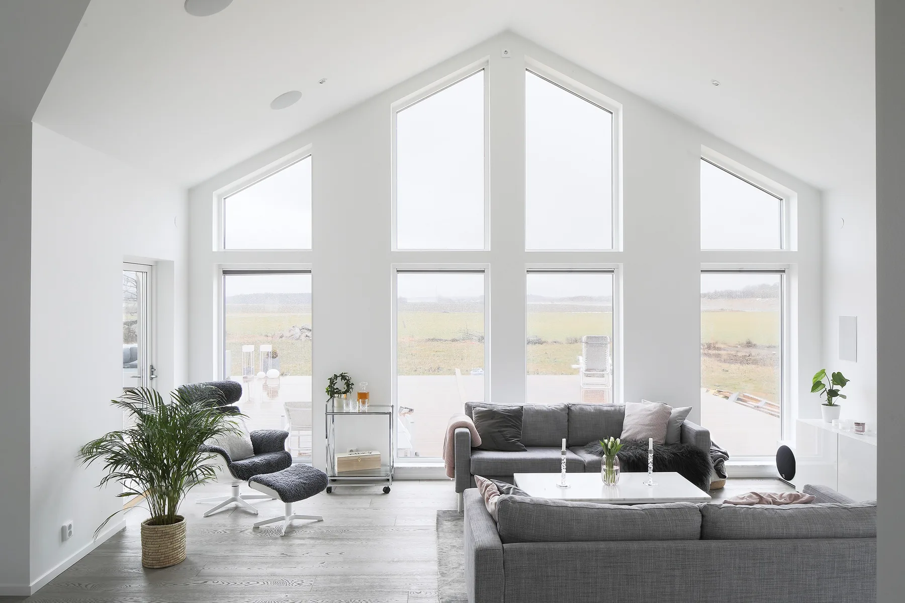

Uppsala Måleri & Kulör
Hantverk som
sätter färg.
Från första penseldrag till sista detalj. Måleri för hem, företag och BRF i Uppsala.
Det sitter i förarbetet.
Det syns i resultatet.
Vi är Uppsala Måleri & Kulör. Sedan 2011 hjälper vi människor och företag att förnya sina miljöer, med noggrant hantverk och nära dialog hela vägen.
Om ossVarje yta.
Samma omsorg.
Ett rum, en fasad eller en helt ny fastighet.
Vi tar hand om måleriet.
Andra önskemål? Kontakta oss så hittar vi en lösning.

Precision i förarbetet. Känsla i resultatet.
Resultat som
talar för sig själva.
Ett urval ur vårt referensgalleri.
Se våra arbetenOrd från en kund
”Tydlig kommunikation, raka puckar och snyggt resultat.”
Marta Elfineh Google-omdöme, 26 januari 2022
30%
Måleri med ROT-avdrag.
Du kan få avdrag på upp till 30 procent av arbetskostnaden för godkända ROT-arbeten, om villkoren är uppfyllda. Material ingår inte. Vi hjälper till med hanteringen.
Villkor hos SkatteverketBra att veta.
Vilka typer av uppdrag tar ni?
Vi hjälper privatpersoner, företag och BRF med invändigt och utvändigt måleri, tapetsering, renovering och nyproduktion.
Är offerten kostnadsfri?
Ja. Kontakta oss så bedömer vi projektet och lämnar en tydlig offert.
Hjälper ni till med färgval?
Gärna. Vi hjälper dig att välja kulör och material som passar ytorna och det uttryck du vill skapa.
Kan jag använda ROT-avdrag?
Du kan ha rätt till ROT-avdrag för godkända arbeten i en bostad du äger. Vi hjälper till med det praktiska.
Hur lång tid tar arbetet?
Det beror på omfattning och underlag. Vi går igenom tidsplanen med dig innan arbetet börjar.
Dags att ge ditt
projekt färg?
Stort eller litet. Berätta vad du har i åtanke,
så tar vi det vidare tillsammans.